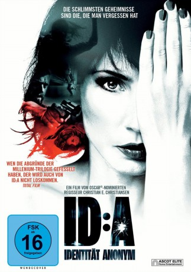
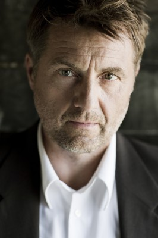

#4568 ID:A - Identität Anonym
 
 IMDB-Wertung: 6.1 / 10
IMDB-Wertung: 6.1 / 10  Metascore: 0
Metascore: 0 
Wer bin ich und warum so nass? Eine Frau (Maria Tuva Novotny) erwacht mit Gedächtnisverlust an einem Fluss im ländlichen Frankreich. Sie hat eine Kopfverletzung, einen Sack voller frischer Euroscheine und Verfolger, wie sie bald merken wird. Die Frau, die sich bis zum Beweis des Gegenteils Aliena nennt, versucht, das Rätsel um ihre Identität zu lösen: Sie spricht perfekt Französisch, aber ist sie auch Französin? Irgendwann führen sie die Spuren nach Kopenhagen, wo sie offenbar mit einem Opernsänger verheiratet war…
Jahr: 2011
Dauer: 104 Minuten
FSK: 16
Land: Dänemark Studio: Ascot Elite Home EntertainmentTonspuren:
Untertitel: Deutsch,
Auflösung: 1080p (1920x816) Größe: 8611 MB
Genre: Thriller
Regisseur: Christian E. Christiansen
Drehbuch: Bruce Wagner
Soundtrack:
Darsteller:
- Tuva Novotny als Aliena / Ida
- Arnaud Binard als Pierre
-  Jens Jørn Spottag als HP
- Simon van Lammeren als Johan
 Joe Toedtling als Henk
Joe Toedtling als Henk- Jens Sætter-Lassen als Boy
 Hans Henrik Clemensen als Taxi driver
Hans Henrik Clemensen als Taxi driver- Flemming Enevold als Just
- Carsten Bjørnlund als Martin
- John Buijsman als Rob
- Rogier Philipoom als Guus
- Marie Louise Wille als Marietta
- Françoise Lebrun als Isabelle
- Koen Wouterse als Tim
- Finn Nielsen als Rosie
- Henrik Prip als Ove
- Ann Hjort als Dolly
- Joen Bille als Anton
- Slavo Bulatovic als Ugo
- Philippe Van Den Bergh als Man in bar
- Anne Kristine Bech als French cashier
- Lars Thiesgaard als Doctor
- Christina Mølgård als Receptionist
- Tara Uitterlinden als Dutch receptionist
- Ron Groenewoud als Used car dealer
- Marco Rollot als Man on bridge
- Pierre Lelieu als Truck driver
- Hans Hoogendoorn als Dutch News Reader
- Kristoffer Meinert als Danish News Reader
- Nordsjællands Symfoniorkester als Orchestra
Datei: X:\2011(G-M)\IDA - Identität Anonym (2011, FSK16, 1920x816).mkv seit 17.10.2016
Festplatte: HD 2011(G-Z)
 Es gibt insgesamt 100 Filme in der Gruppe '2011(G-M)'
Es gibt insgesamt 100 Filme in der Gruppe '2011(G-M)'